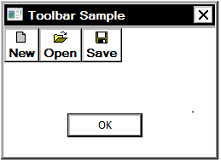
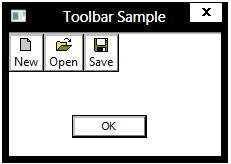
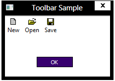

This topic compares the support for high contrast themes in Windows 8 to that of previous versions of Windows, and explains how to support high contrast themes in a Windows 8 application.
It includes the following sections.
Windows 7 and earlier support two theming models, including the legacy Windows classic model, and the current visual styles. The Windows classic model has been retained through Windows 7 mainly to support the various high contrast themes. However, the Windows classic model has a number of drawbacks:
In Windows 8 and later, the following changes to the theming model address the previous drawbacks:
In Windows 8, because visual styles are on in high contrast mode, supporting high contrast themes is straightforward as long as you heed the following guidelines.
An application manifest is an XML file that describes the requirements for an application. The compatibility section of the manifest identifies the versions of Windows supported by the application. The following GUIDs are used in the compatibility section to identify the various versions of Windows.
| Version | GUID |
|---|---|
| Windows Vista | {e2011457-1546-43c5-a5fe-008deee3d3f0} |
| Windows 7 | {35138b9a-5d96-4fbd-8e2d-a2440225f93a} |
| Windows 8 | {4a2f28e3-53b9-4441-ba9c-d69d4a4a6e38} |
Â
The compatibility section can specify multiple versions of Windows, but each must be contained within its own <supportedOS/> tag. The following example shows an application manifest that specifies Windows 7 and Windows 8 in the compatibility section:
<?xml version="1.0" encoding="UTF-8" standalone="yes"?>
<assembly xmlns="urn:schemas-microsoft-com:asm.v1" manifestVersion="1.0">
<compatibility xmlns="urn:schemas-microsoft-com:compatibility.v1">
<application>
<!--The ID below indicates application support for Windows 8 -->
<supportedOS Id="{4a2f28e3-53b9-4441-ba9c-d69d4a4a6e38}"/>
<!--The ID below indicates application support for Windows 7 -->
<supportedOS Id="{35138b9a-5d96-4fbd-8e2d-a2440225f93a}"/>
</application>
</compatibility>
</assembly>
If an application does not have a compatibility manifest, it is assumed to be a Windows Vista application and does not use themed controls in the client area when a high contrast theme is active. Also, the behavior of some visual styles functions are affected. For example, IsThemeActive, IsCompositionActive, and IsAppThemed return FALSE, while OpenThemeData and OpenThemeDataEx return a NULL handle. This is for compatibility support, so that applications built before Windows 8 can still render their UI in the same look as the high contrast mode of previous versions of Windows where visual styles are not available.
On Windows 8, the application still receives the benefits of desktop composition. This means, for example, that usability applications such as the full screen magnifier don't depend on the status of an individual application's manifest. The usability application continues to work in high contrast mode with an application that does not identify itself as Windows 8 compatible in its manifest.
The following images show a simple dialog box in high contrast on Windows 7.

This image shows the same dialog box in high contrast on Windows 8, but with Windows 7 compatibility specified in the application manifest:

This image shows the same dialog box in high contrast on Windows 8, with Windows 8 specified in the application manifest:

Applications running on previous versions of Windows do not have access to the new high contrast themes. If your application needs to run on previous versions of , you should include support for rendering your UI in high contrast in the Windows classic theming model. Your application can determine whether a high contrast theme is active by calling the SystemParametersInfo function with the SPI_GETHIGHCONTRAST flag.
Â
Â